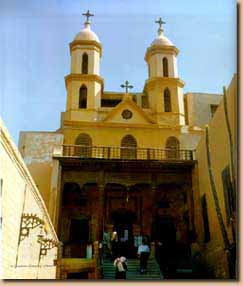
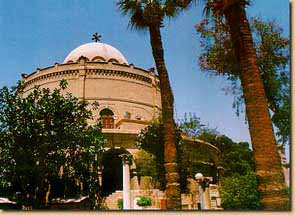
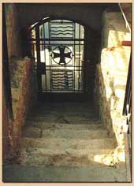
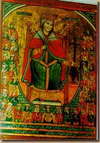
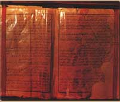

مرت العائلة المقدسة وهى فى طريقها من الزيتون الى مصر القديمة على المنطقة الكائن بها حالياً كنيسة السيدة العذراء الاثرية بحارة زويلة وكذلك على العزوباية بكلوت بك
اما عن منطقة وسط القاهرة فتوجد بها
كنيسة العذراء الاثرية بحارة زويلة
كنيسة الشهيد العظيم مارجرجس
كنيسة القديس مرقوريوس ابى سيفين
دير السيدة العذراء للراهبات
ديرمارجرجس للراهبات
ومنطقة كلوت بك بها
الكنيسة المرقسية الكبرى بالازبكية بكلوت بك
مقررات لاديرة الرهبان وبها كنائس متعددة
كاتدرائية مارمرقس بالأزبكية
الكنيسة المعلقة - مصر القديمة
ووصلت العائلة المقدسة إلى مصر القديمة ، وتعتبر منطقة مصر القديمة من أهم المناطق والمحطات التي حلت بها العائلة المقدسة في رحلتها إلى أرض مصر ، ويوجد بها العديد من الكنائس والأديرة وقد تباركت هذه المنطقة بوجود العائلة المقدسة ، ولم تستطع العائلة المقدسة البقاء فيها إلا أياماً قلائل ، نظراً لتحطم الأوثان فأثار ذلك والي الفسطاط فأراد قتل الصبي يسوع ، وكنيسة القديس سرجيوس ( أبو سرجة ) بها الكهف ( المغارة ) التي لجأا إليها العائلة المقدسة وتعتبر من أهم معالم العائلة المقدسة بمصر القديمة .
وسنورد كنائس منطقة حصن بابليون مصر القديمة
كنيسة القديس سرجيوس - ابو سرجه
كنيسة العذراء الشهيرة بالمعلقة
كنيسة القديسة بربارة
كنيسة مارجرجس - بقصر الشمع
كنيسة العذراء الشهيرة باسم قصرية الريحان
دير مارجرجس للراهبات
حصن بابليون والمتحف القبطى وكنيسة مارجرجس للروم الاثوذكس
المعبد اليهودى بن عزرا
اما الكنائس الموجودة بالفسطاط - مصر القديمة وهى تقع بالقرب من جامع عمرو بن العاص فهى
كنيسة القديس مرقوريوس المعروف بأبى سيفين
كنيسة الانبا شنوده
كنيسة السيدة العذراء المعروفة بالدمشيرية
دير السيدة العذراء للراهبات
دير ابى سيفين للراهبات
كنيسة السيدة العذراء - بابليون الدرج
كنيسة اباكير ويوحنا
كنيسة الامير تادرس المشرقى
كنيسة رئيس الملائكة ميخائيل التى تعرف بدير الملاك القبلى
كنيسة مارمينا بزهراء مصر القديمة
كنيسة القديسة بربارة من الداخل - مصر القديمة
كنيسة مارجرجس للروم الارثوذكس
ارتحلت العائلة المقدسة من منطقة مصر القديمة متجهة ناحية الجنوب ، حيث وصلت إلى منطقة المعادي - أحد ضواحي منف - عاصمة مصر القديمة . وقد أقلعت العائلة المقدسة في مركب شراعي بالنيل متجهة نحو الجنوب ( بلاد الصعيد ) ، من البقعة المقام عليها الآن كنيسة السيدة العذراء المعروفة بالعدوية ، لآن منها عبرت ( عدت ) العائلة المقدسة إلى النيل في رحلتها إلى الصعيد ومنها جاء اسم المعادي . وما زال السلم الحجري الذي نزلت عليه العائلة المقدسة إلى ضفة النيل موجوداً وله مزار يفتح من فناء الكنيسة .
ومن الأحداث العجيبة التي حدثت عند هذه الكنيسة ، أنه في يوم الجمعة 3 برمهات الموافق 12 مارس 1976 ، وجد الكتاب المقدس مفتوحاً على سفر أشعياء النبي الإصحاح 19: 25 - : "مبارك شعبي مصر" . طافياً على سطح الماء في المنطقة المواجهة للكنيسة من مياه النيل.
كنيسة العذراء مريم -المعادى
السلم الحجرى الأثرى بكنيسة العذراء - المعادى
أيقونة للقديسة دميانة بكنيسة السيدة العذراء - المعادى
الكتاب المقدس - كنيسة السيدة العذراء - المعادى